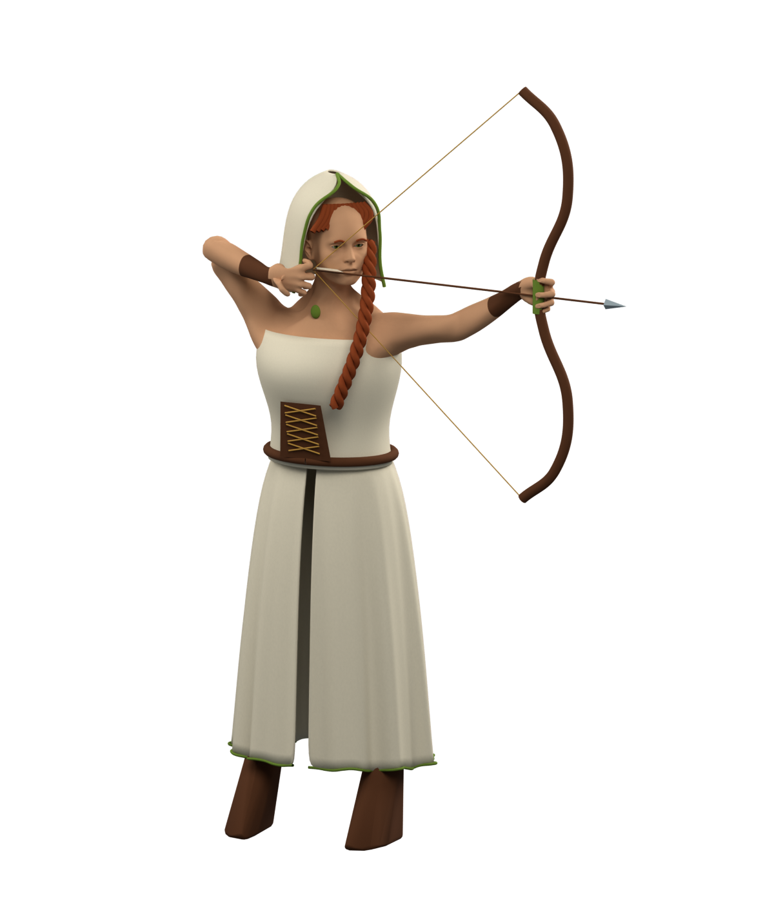

<!doctype html>
<html lang="en">
<meta charset="utf-8">
<meta name="viewport" content="width=device-width, initial-scale=1">
<title>Archer · rendered sprite study</title>
<style>
* { box-sizing: border-box; }
body { margin: 0; background: #e9e5dc; color: #2b3029; font: 16px/1.5 system-ui, sans-serif; }
main { max-width: 1100px; margin: auto; padding: 28px; }
header { display: flex; align-items: baseline; justify-content: space-between; gap: 20px; margin-bottom: 20px; }
h1 { margin: 0; font: 38px/1.1 Georgia, serif; letter-spacing: -.03em; }
.eyebrow { margin: 0 0 9px; text-transform: uppercase; font-size: 11px; letter-spacing: .16em; color: #67705c; }
a { color: inherit; text-underline-offset: 4px; }
.layout { display: grid; grid-template-columns: minmax(0, 1fr) 280px; gap: 24px; }
.stage { border: 1px solid #d0ccbf; border-radius: 12px; display: grid; place-items: center; background: #f5f2e9; min-height: 560px; }
.stage img { display: block; width: 100%; max-width: 620px; max-height: 72vh; object-fit: contain; }
aside { padding: 18px 0; }
h2 { margin: 0 0 10px; font: 22px Georgia, serif; }
p { margin: 0 0 18px; }
.note { color: #62675c; font-size: 14px; }
.samples { display: flex; gap: 8px; margin: 16px 0 22px; }
.tile { display: grid; place-items: center; width: 132px; height: 148px; background: #eee9db; border: 1px solid #d0ccbf; border-radius: 6px; }
.tile.dark { background: #363a35; border-color: #363a35; }
.tile img { height: 128px; width: auto; }
button { border: 1px solid #9caa91; background: transparent; color: inherit; border-radius: 20px; padding: 8px 13px; cursor: pointer; margin: 3px 4px 10px 0; }
button[aria-pressed="true"] { background: #354635; color: white; }
button:focus-visible { outline: 3px solid #78936d; outline-offset: 3px; }
.links { margin-top: 22px; display: flex; flex-wrap: wrap; gap: 16px; font-size: 13px; }
@media(max-width: 700px) { main { padding: 18px; } h1 { font-size: 30px; } header { align-items: center; } .layout { grid-template-columns: 1fr; gap: 12px; } .stage { min-height: 0; } .stage img { max-height: 65vh; } aside { padding: 8px; } }
</style>
<main>
<header><div><p class="eyebrow">King Down · one-pose experiment</p><h1>Archer at full draw</h1></div><a href="../">Painted study</a></header>
<div class="layout">
<div class="stage"></div>
<aside>
<h2>One complete character</h2>
<p>The arms and fingers belong to a single posed body. The result is exported as a transparent 2D sprite.</p>
<p class="note">This is a static method test. It still looks like a rendered model; the painted finish and animation are unfinished.</p>
<h2>At board size</h2>
<p class="note">128 px image height, on light and dark squares.</p>
<div class="samples"><div class="tile"></div><div class="tile dark"></div></div>
<h2>Inspect the silhouette</h2>
<div aria-label="Preview background"><button type="button" data-bg="#f5f2e9" aria-pressed="true">Light</button><button type="button" data-bg="#363a35" aria-pressed="false">Dark</button><button type="button" data-bg="#788e73" aria-pressed="false">Green</button></div>
<div class="links"><a href="full-draw.png">Full-size PNG</a><a href="hands-detail.png">Hands close-up</a><a href="archer-pose.blend" download>Blender source</a><a href="README.md">Study notes</a></div>
</aside></div>
</main>
<script>
for (const button of document.querySelectorAll('button[data-bg]')) button.addEventListener('click', () => {
 document.querySelector('.stage').style.background = button.dataset.bg;
 for (const candidate of document.querySelectorAll('button[data-bg]')) candidate.setAttribute('aria-pressed', String(candidate === button));
});
</script>
</html>
